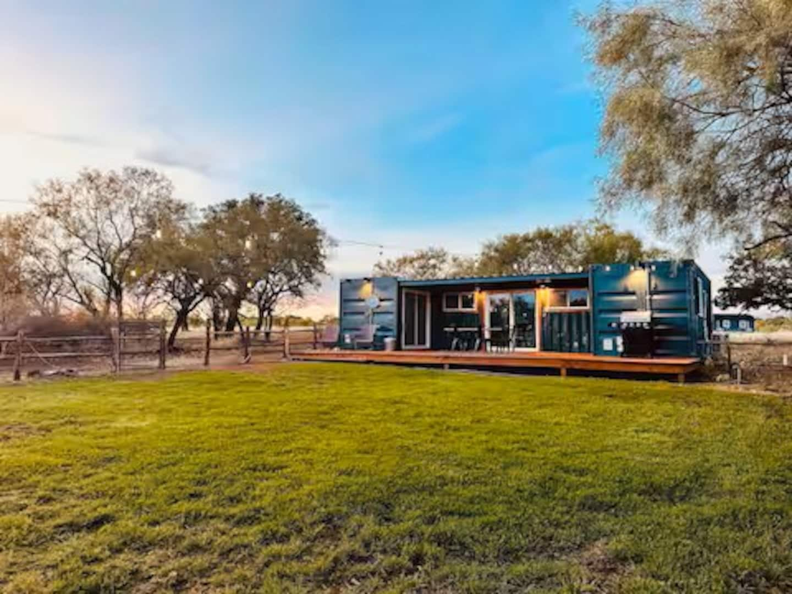
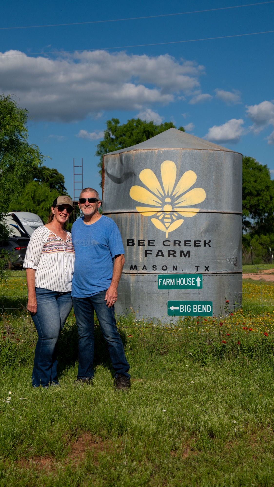
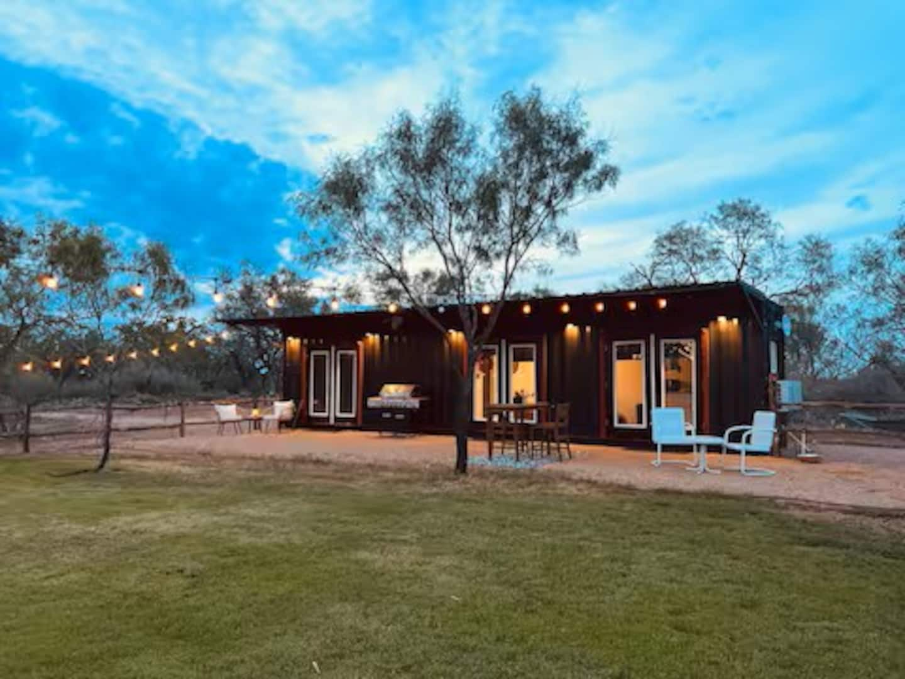
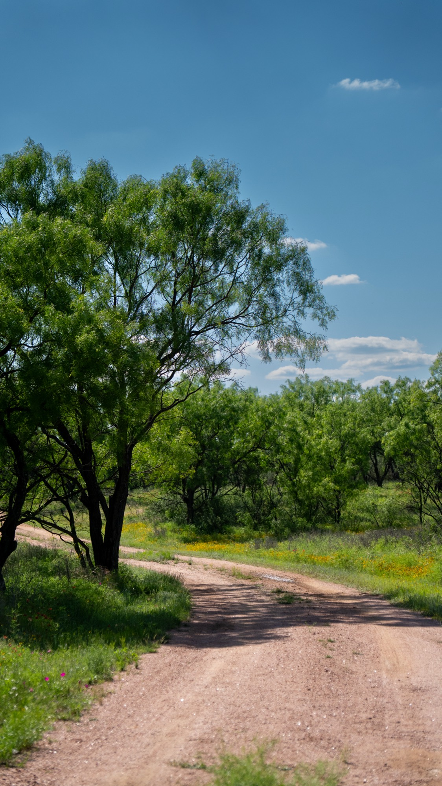
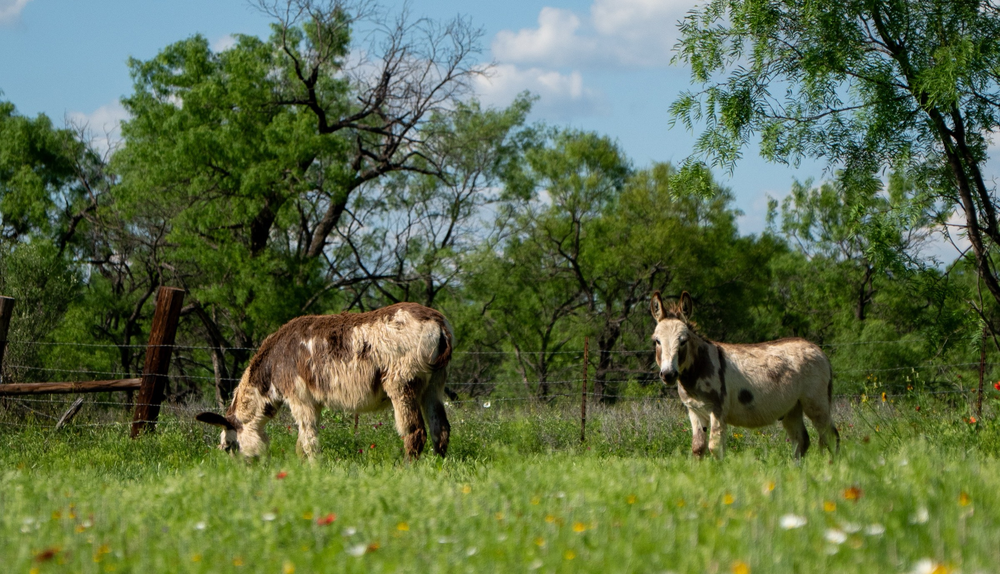
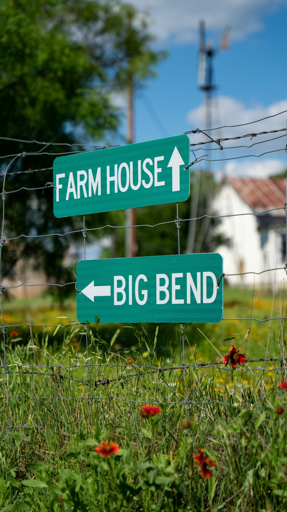
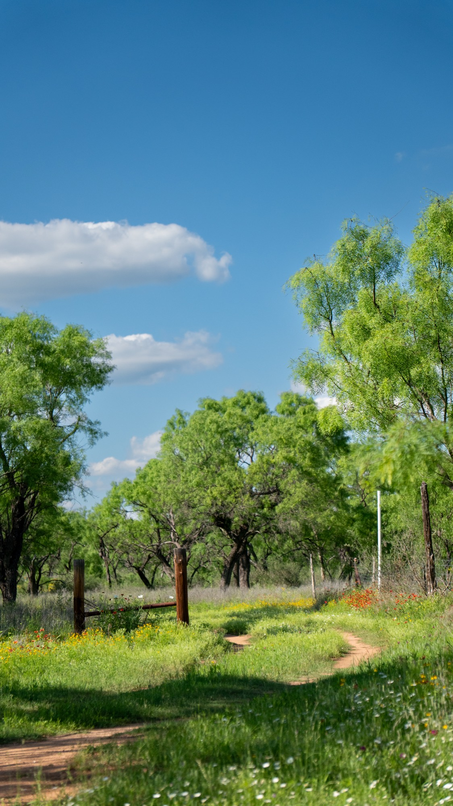
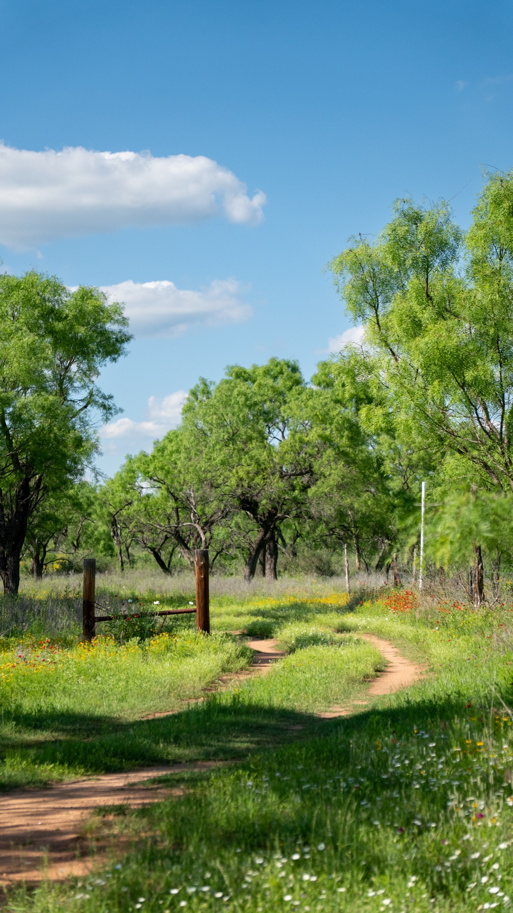
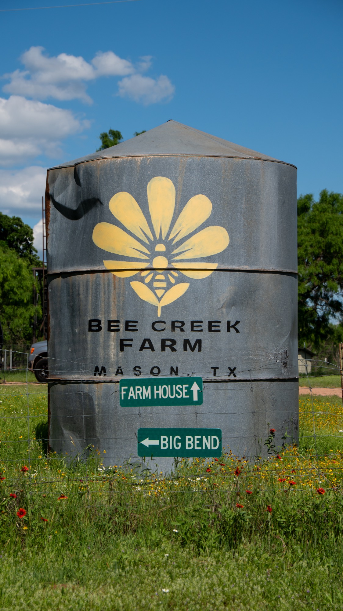

Container · Big Bend

Big Bend
Twin teal-blue containers split by a covered deck, strung with bistro lights and pulled up to the mesquite line. Two bedrooms, sliding doors to the pasture, BBQ on the porch.
Mason, Texas · 32 Acres
A working farm on Bee Creek with two shipping-container cabins set around the farmhouse. Donkeys out the window. Wildflowers underfoot. A porch made for slow mornings.

The Family
We took ownership of Bee Creek Farm in April 2026. The kind of recent that still feels like a held breath. Everything was already here when we walked the property — the farmhouse, the silo with its hand-painted bee, the two container cabins, the donkeys out in the wildflower field. Our job now is to listen to the place and refine it, slowly, in the directions it's already going.
We bought these 32 acres because the Hill Country has a way of stretching time out, and we wanted somewhere to share that with people. Pull up a porch chair. Stay a couple of nights. Experience the Texas Hill Country the way it's meant to be. We'll leave the lights on.
— The Bee Creek Family
Where to Stay
Pick a porch. Both shipping-container cabins come with a full kitchen, BBQ, fast Wi-Fi, and 32 acres for a backyard.

Twin teal-blue containers split by a covered deck, strung with bistro lights and pulled up to the mesquite line. Two bedrooms, sliding doors to the pasture, BBQ on the porch.

A black container with red door accents tucked behind a wood-rail fence. Patio dining, BBQ, fire pit, and the kind of dark sky you drove all the way out here for.
The Heart of the Farm
The original farmhouse isn't for rent — it's where the family lives, where the dogs nap on the porch, and where the property gets its rhythm. You'll see it from both cabins. Come say hi.
Not available to book · Always part of the experience
The Land
Mesquite groves, dirt roads that wander, wildflowers thick enough to lay down in. Take the long way.






"The Hill Country teaches you how to slow down. The donkeys help." — A guest, Spring 2026
While You're Here
Pink granite domes, a small-town square, four million bats, the state gem, and a winery that started it all. Six honest favorites within an easy drive.
~45 minutes south
The 425-foot pink granite dome, largest monadnock in the country. Climb it at sunrise. Day-use entry fills up — reserve ahead at TPWD on weekends.
10 minutes from the farm
Old Yeller's Market every Saturday 9–4 with crafts, antiques, and local food. The Odeon Theater, the courthouse, and the Old Yeller statue — author Fred Gipson was a Mason native.
In town · est. 2004
Mason's first winery and still the heart of the wine bar scene. Tasting room, art gallery, and a backyard worth lingering in. Walking distance from the square.
~25 min · Thu–Sun, mid-May–Oct
Four million Mexican free-tailed bats stream out at dusk all summer long. One of the largest bat nurseries in North America. Bring water and a folding chair.
By appointment
Mason County is the only place in Texas where blue topaz — the state gem — is found in the wild. Hunt streambeds and granite outcrops at one of the local ranches.
15 minutes east
Cold, clear, slow-moving Hill Country river. Tube, paddle, or just wade in. Public access at the highway crossings — pack a sandwich and stay all afternoon.
Plan Your Stay
Have a question about the property, want to book direct, or planning something special? Send a note and we'll get back to you within a day.